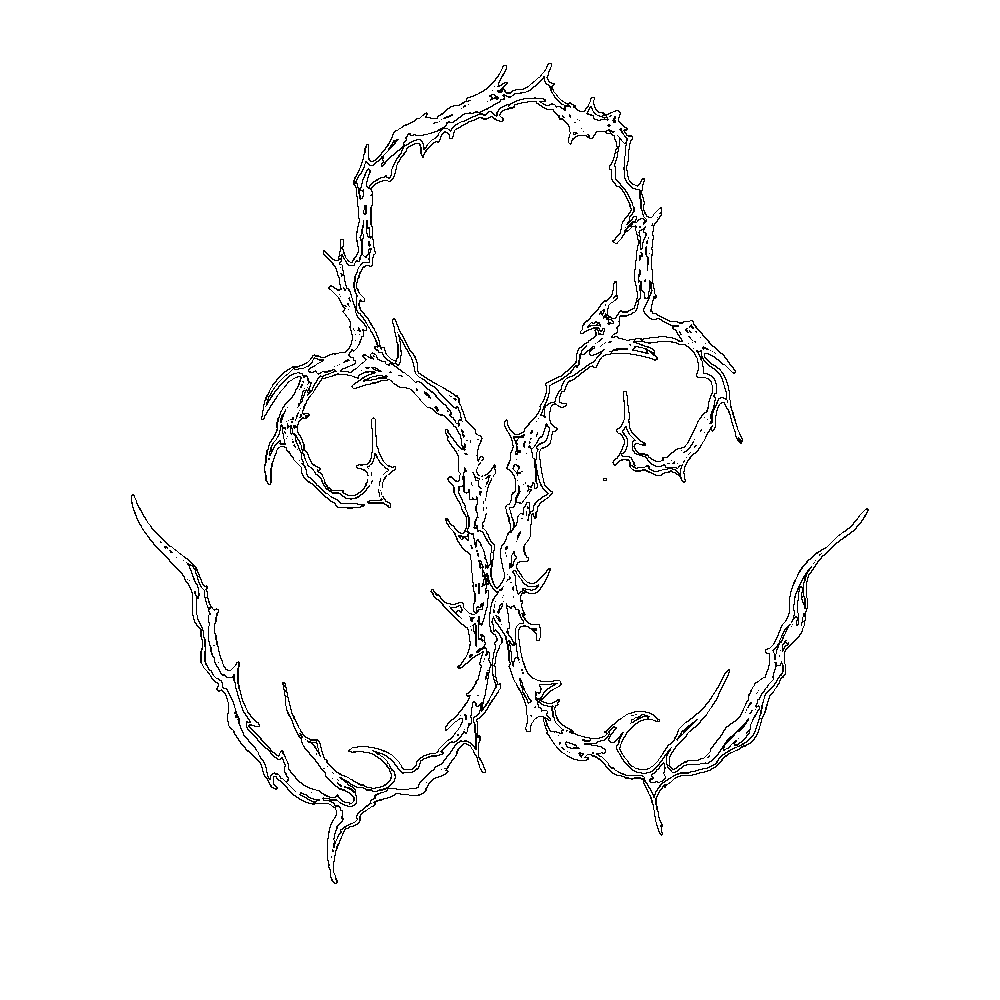
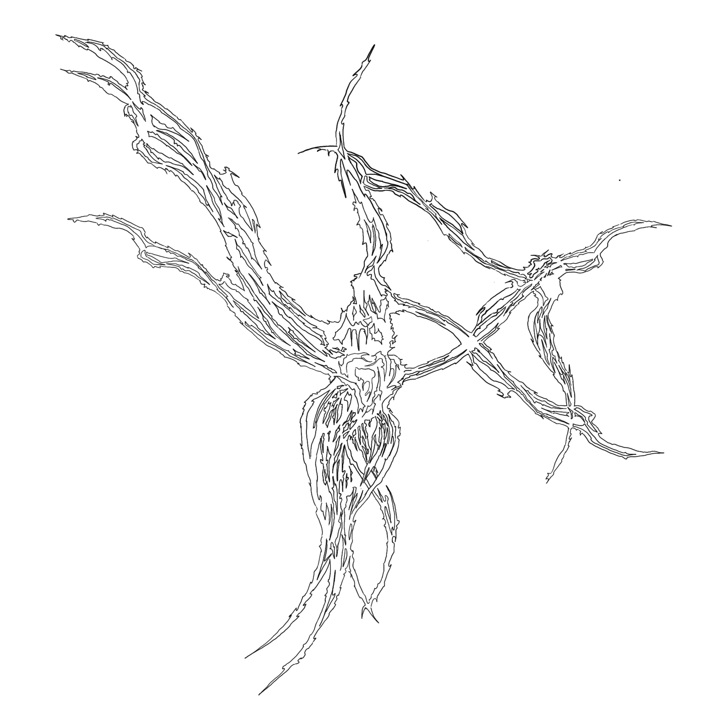
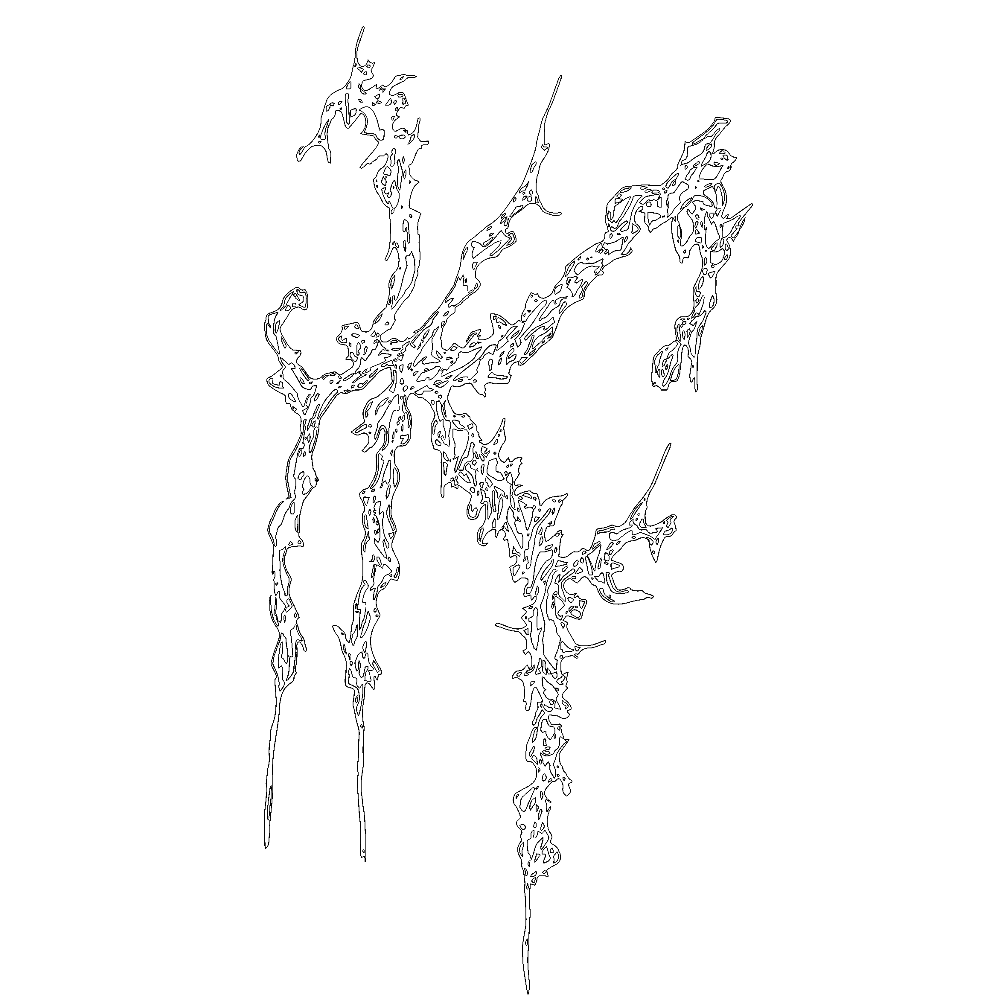
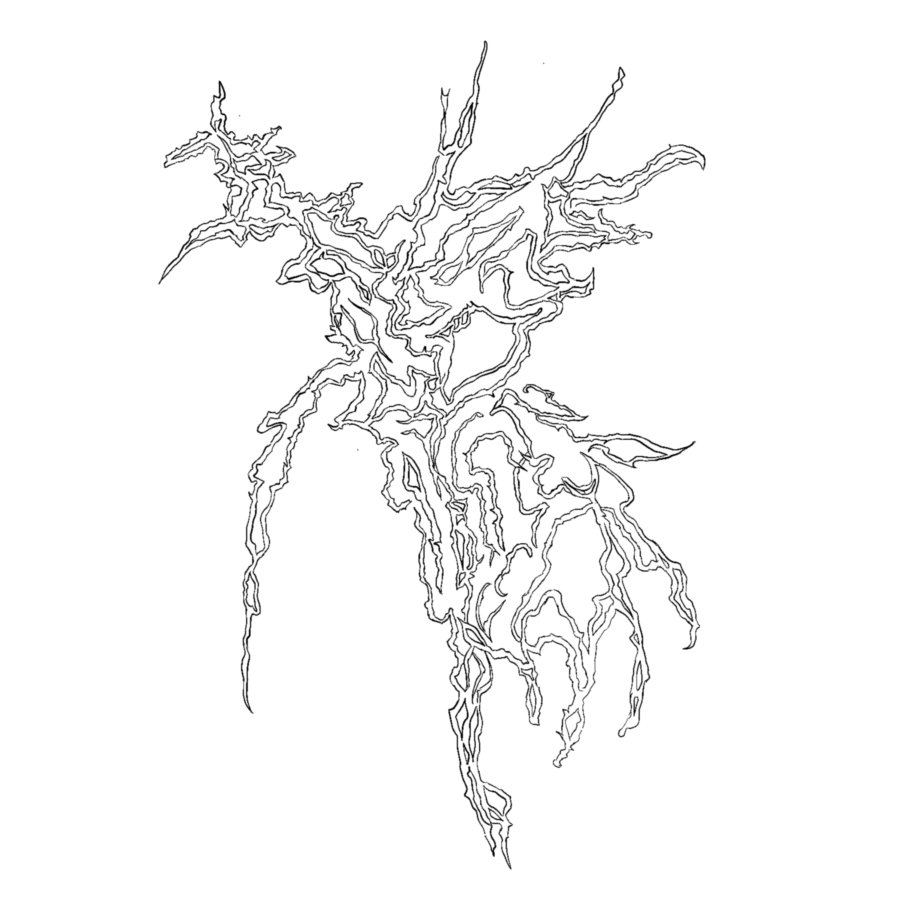

Chasing Shadows
ambient ecologies, ecstatic still points

weightless altar

divine bell of tender glass

compared to my heart’s desire, the sea is a drop

an exaggeration that eats the mouth

gods of the wind